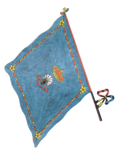

CAPITANI VITTORIOSI:
2 Paolo Tognazzi
1 Gesualdo Grossi
1 Andrea Corsi
1 Andrea Coppi
1 Carlo Vannucchi
1 Ferdinando Ricci
1 Santi Vasai
1 Ferdinando Vannucchi
1 Giovanni Bruttini
1 Pilade Marconi
Capitani del Nicchio che non presero mai parte al Palio:
1803 Gaetano Donati
1815 Ferdinando Vannucchi Sr.
1833 Gaetano Coppi
1835 Gaetano della Santa
1850 Pietro Tani
1883 Michele Patrizi


- IN GRASSETTO QUANDO VINSE
- * CAPITANO ANCHE NEL NOVECENTO